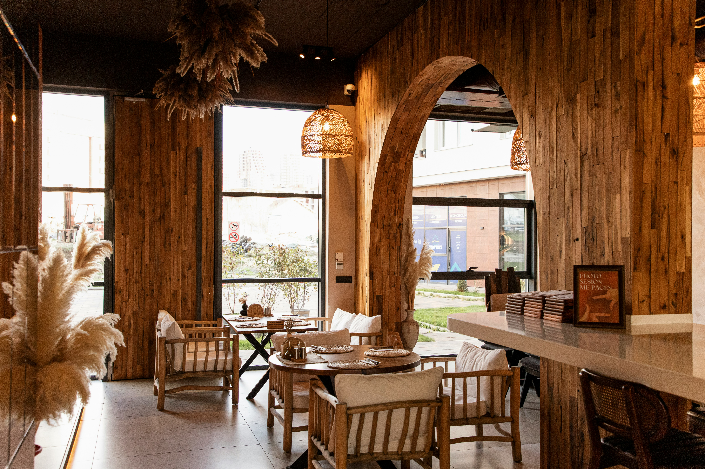
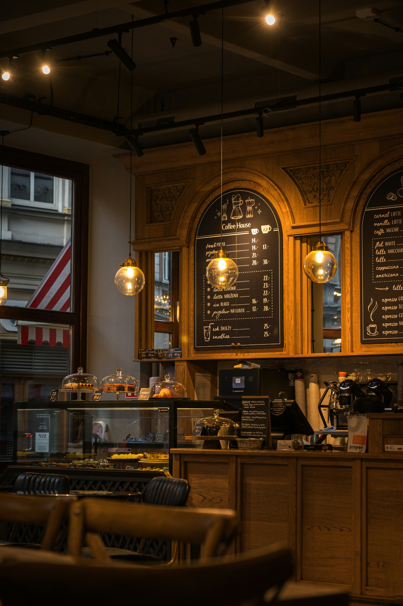
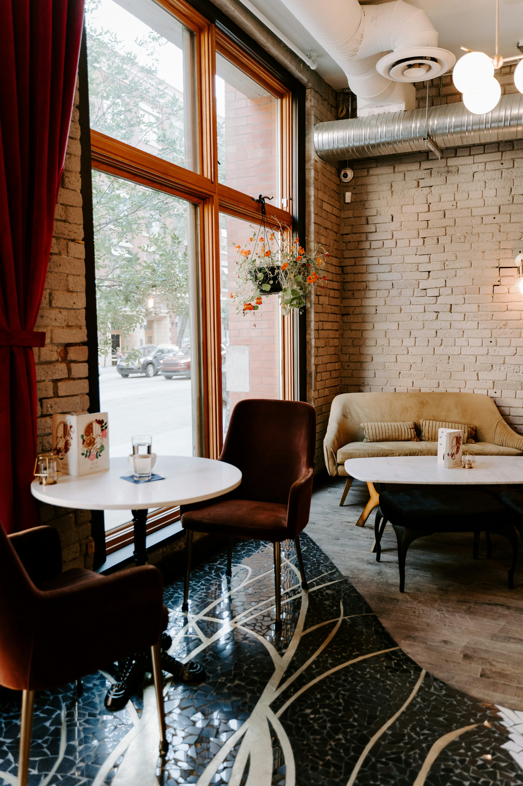
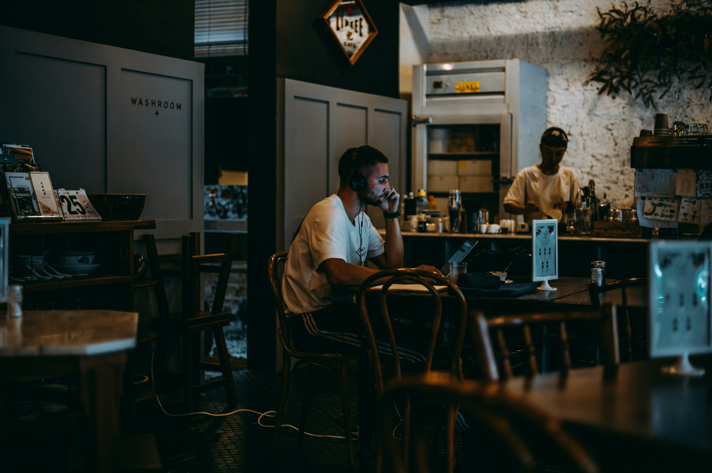
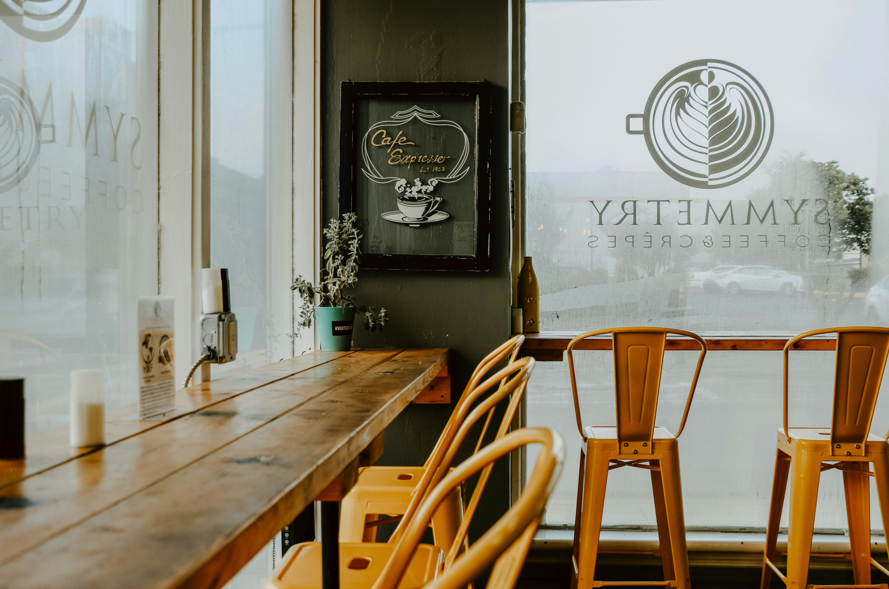
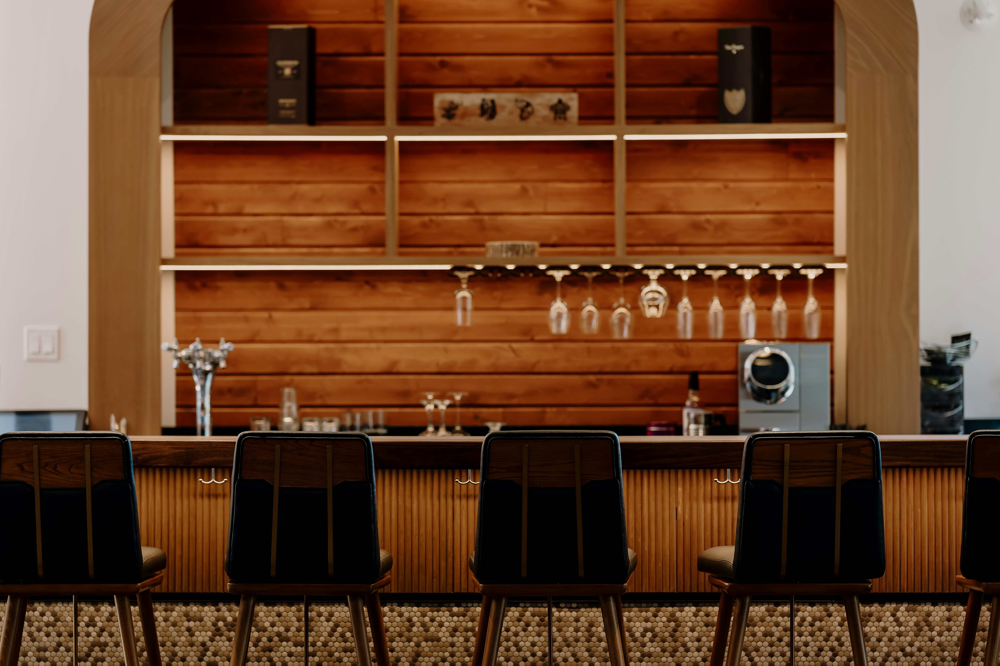

Адрес
1247 NW Glisan St
Район Pearl District, Портленд, штат Орегон, 97209
SPECIALTY COFFEE · EST. 2016
Моносорта, обжаренные в нашей кофейне и приготовленные сертифицированными бариста, которые вкладывают душу в каждую чашку.
8+
Лет мастерства
40к+
Поданных чашек
12
Стран-источников
Зерна с микролотов Эфиопии, Колумбии и Гватемалы с прозрачным происхождением — каждый пакет хранит историю вкуса, в которой отражены почва и время сбора урожая.
Обжариваем зерна в собственной печи каждую среду. Они попадают на бар в течение 72 часов после обжарки, чтобы сохранить максимальную яркость вкуса.
Оформите заказ до 11:00, и мы привезем его в тот же день в радиусе 5 км. Свежий кофе будет у вашей двери еще до полудня.
Команда с сертификатами SCA и общим опытом работы за баром более 40 лет. Каждая чашка — это ремесло, а не рутина.
 Фирменный
Фирменный
450₽
Насыщенный шот из эфиопской Иргачефф с яркими нотами черники и жасмина.
 Популярное
Популярное
600₽
Бархатистое овсяное молоко с насыщенным двойным эспрессо и нежной микропеной, нарисованной вручную.

Aroma началась с небольшого фуд-трака площадью 200 квадратных футов на улице SE Morrison в 2016 году. Основатель Кай Адейеми вернулся из года, проведённого на кофейных фермах Эфиопии, с одной убеждённостью: отличному кофе не нужны украшения — ему нужна честность. Сегодня мы работаем в нашем флагманском пространстве в районе Pearl District и обжариваем всё зерно в собственном цеху на 12-килограммовом ростере Giesen. Каждая закупка зерна по-прежнему осуществляется лично, наши отношения с фермерами длятся годами, а каждый бариста проходит 200 часов структурированного обучения, прежде чем впервые подойдёт к профессиональной кофемашине. Мы верим, что кофе в лучшем своём проявлении — это сельское хозяйство, и люди, которые выращивают эти зёрна, заслуживают не меньше признания, чем те, кто готовит из них напиток.
12
Партнёров-фермеров
3
Степени обжарки
100%
Прямые закупки






1247 NW Glisan St
Район Pearl District, Портленд, штат Орегон, 97209
+7 (***) ***-****
hello@aromacoffee.com
Пн – Пт: 6:30 – 19:00
Сб – Вс: 7:00 – 20:00

Отзывы
Что говорят наши постоянные гости.
«Aroma — единственное место в городе, где я искренне радуюсь каждой чашке кофе. Ради их пуроверов сюда определённо стоит приехать.»
Майя Чен
Ценитель кофе и фуд-блогер
«Я облюбовала угловой столик и превратила его в свой офис. Капучино на овсяном молоке — мой ежедневный ритуал в 9 утра, а плейлист в кофейне никогда не подводит.»
Дэниел Осей
Дизайнер-фрилансер
«Как человек, чья работа неразрывно связана со вкусом, я каждый раз восхищаюсь глубиной их колд-брю. Никакой горечи — только чистый шоколад и ноты косточковых фруктов.»
Софи Лоран
Шеф-кондитер